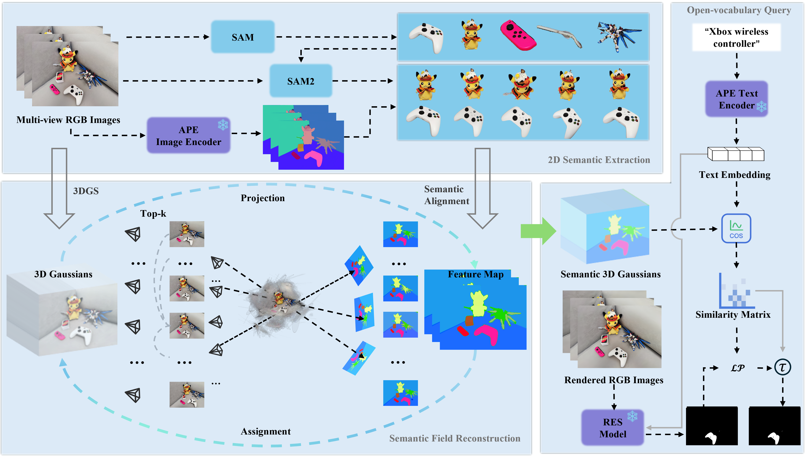

The framework of SinglePro consists of three main modules. The 2D semantic extraction module reconstructs a Gaussian scene, extracts multi-view semantic features, and performs semantic alignment across views. The 3D Gaussian semantic field reconstruction module establishes a mapping between 2D semantic IDs and 3D Gaussian points. The open-vocabulary segmentation module generates pseudo masks using a 2D foundation model and determines the optimal threshold via Linear Programming (LP) to produce the final masks.
Bridging 2D-to-3D Scene Understanding via Single Training-free Projection
Abstract
In recent years, 3D Gaussian Splatting (3DGS) has become a powerful method for reconstructing and visualizing complex scenes. However, challenges remain in integrating semantic information due to cross-view inconsistencies and the mismatch between high-dimensional semantic features and the 3D spatial structure. To address this, we propose SinglePro, a training-free 2D-to-3D semantic mapping framework based on geometric projection. With just a single projection, SinglePro uses a pre-trained 2D vision foundation model to extract semantic features and assigns a unique ID to each semantic entity. Leveraging camera parameters from the 3D reconstruction stage, it directly maps the aligned 2D semantics to multi-view 3D Gaussian points, enabling lightweight and efficient semantic labeling.
Pipeline Overview
Pipeline Overview

visualization comparisons of open-vocabulary querying results on the 3DOVS dataset. The last row shows a failure case, in which SinglePro produces a segmentation mask with holes, while LEGau fails to segment the grey sofa entirely.
BibTeX
BibTex Code Here